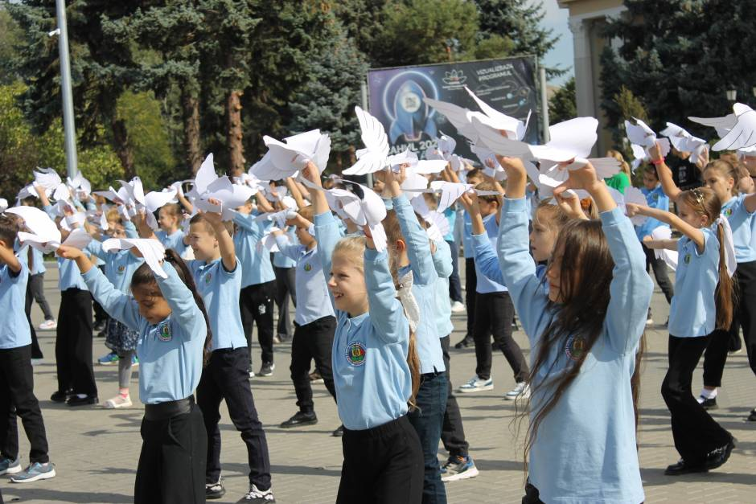

SafeNet Junior este o platformă web educațională interactivă, creată pentru a-i ajuta pe elevii
claselor I–IV să învețe cum să fie în siguranță pe internet. Platforma combină lecții explicative,
scenarii
interactive și jocuri educaționale, adaptate nivelului de vârstă al copiilor.
Scopul principal
al
proiectului este de a transforma regulile de siguranță digitală într-o experiență
ușor de înțeles
și
plăcută, prin învățare prin joc și decizie.
SafeNet Junior este destinată:
● Elevilor din clasele I–IV;
● Cadrelor didactice care predau
Educație Digitală;
● Instituțiilor de învățământ primar care doresc să
integreze resurse digitale moderne în procesul
educațional.
Platforma poate fi utilizată atât în cadrul lecțiilor,
cât și în
activități extracurriculare sau laboratoare IT.

Proiectul este realizat pentru Școala Primară Alexandru Donici, o instituție de învățământ care deservește elevi din ciclul primar. În prezent, școala nu dispune de o platformă digitală dedicată exclusiv siguranței online, iar SafeNet Junior vine ca o soluție educațională modernă și accesibilă.
Copiii
folosesc
zilnic internetul, jocurile online și aplicațiile digitale,
însă nu pot identifica
întotdeauna riscurile din mediul online. SafeNet Junior a fost creat pentru a:
● explica regulile de siguranță digitală într-un mod simplu;
● permite exersarea comportamentelor sigure prin joc;
● oferi feedback și evaluare a progresului elevilor.
Platformă educațională pentru siguranța online, dedicată elevilor din ciclul primar.
Instituție vizată: Școala Primară „Alexandru Donici”, Cahul
Email: scoalaprimaradonici@gmail.com
Adresă: Școala Primară „Alexandru Donici”, Cahul, Republica Moldova
Acest website a fost realizat în cadrul competiției „Tekwill Junior Ambassadors” organizată de proiectul „Tekwill în Fiecare Școală” și nu reflectă neapărat opinia proiectului.
© 2026 SafeNet Junior.